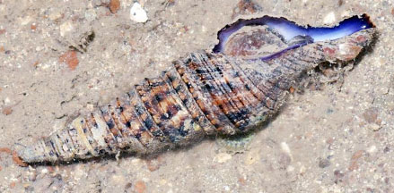

Turrid
snails
Family Turridae
updated
Sep 2020
Where
seen? The elegant Javan turrid
snails are sometimes seen on our sandy shores.
Features: The Family Turridae
is among the largest of marine snails and members are difficult to
distinguish. These snails are active predators that can rasp at prey with their
radula or stab with detachable needle-like teeth charged with venom.
Human uses: They are not actively
harvested although they are occasionally caught by shrimp trawlers. |

Turris nadaensis
Beting Bronok, Jun 18
Photo shared by Loh Kok Sheng on facebook. |
|
Family
Turridae recorded for Singapore
from
Tan Siong Kiat and Henrietta P. M. Woo, 2010 Preliminary Checklist
of The Molluscs of Singapore.
+Other additions (Singapore Biodiversity Records, etc)
| |
Brachytoma
tuberosa
Epidirona multiseriata
Eucithara celebensis
Gemmula cosmoi
Gemmula deshayesii
Inquisitor intertincta
Inquisitor kurodai
Lienardia rubida
Lophiotoma acuta
Lophiotoma leucotropis
Lophioturris polytropa
Pseudodaphnella granicostata
Ptychobela suturalis
Thelycytharella vitrea
Turricula javana (Javan turrid
snail)
+Turris nadaensis
+Turris undosa
|
|
Links
- A turrid shell, Turris undosa, at Lazarus Island, 29 November 2019, Calvin Leow Jiah Jay, Singapore Biodiversity Records 2019: 154 ISSN 2345-7597, National University of Singapore.
- Family
Turridae on The
Gladys Archerd Shell Collection at Washington State University
Tri-Cities Natural History Museum website: brief fact sheet with
photos.
- Family
Turridae
on the The Seashells
of New South Wales website by Des Beechey Research Associate,
Australian Museum: family introductions with photos of shells
and detailed fact sheets for many species.
- Family
Turridae in the Gastropods section by J.M. Poutiers in the FAO
Species Identification Guide for Fishery Purposes: The Living
Marine Resources of the Western Central Pacific Volume
1: Seaweeds, corals, bivalves and gastropods on the Food and
Agriculture Organization of the United Nations (FAO) website.
References
- Tan Siong
Kiat and Henrietta P. M. Woo, 2010 Preliminary
Checklist of The Molluscs of Singapore (pdf), Raffles
Museum of Biodiversity Research, National University of Singapore.
- Bunjamin
Dharma. 1988. Indonesian shells (Siput dan Kerang Indonesia).
PT Sarana Graha. Indonesia. 111 pp.
|
|
|